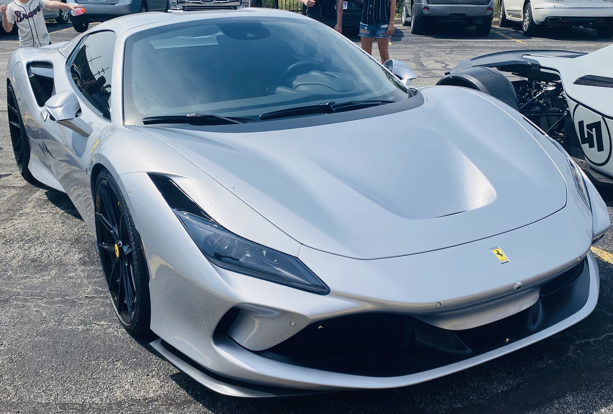

It is now 2024 and while looking forward at the new cars that are to be unveiled is exciting we should look back and see what cars we no longer will be able to see new models of. Many car brands these past few years have or are planning to stop producing some of our most beloved cars including Audi, Chevrolet, Dodge, BMW, and Ferrari.
 Photo by Blake Meyer on Unsplash
Photo by Blake Meyer on Unsplash
The Audi R8 is one of the most favored cars by the Audi community and is sadly being discontinued this year (2024). First announced in 2006 this car has had multiple versions including the Coupé, Spyder, GT, and the very rare Audi R8 e-tron. After its 17-year run, the company has decided to stop production to meet its goals to become an all-electric company.

Photo by: Magnificent Machines
The Ferarri F8 Is the great successor to the 488 and has had a pretty short production time only spanning 4 years (2019-2023). Two main medals were made of the F8 including the Tributo and Spider. The spider had a folding hard top that would be amazing for sunny drives. This car will not have a direct successor itself.